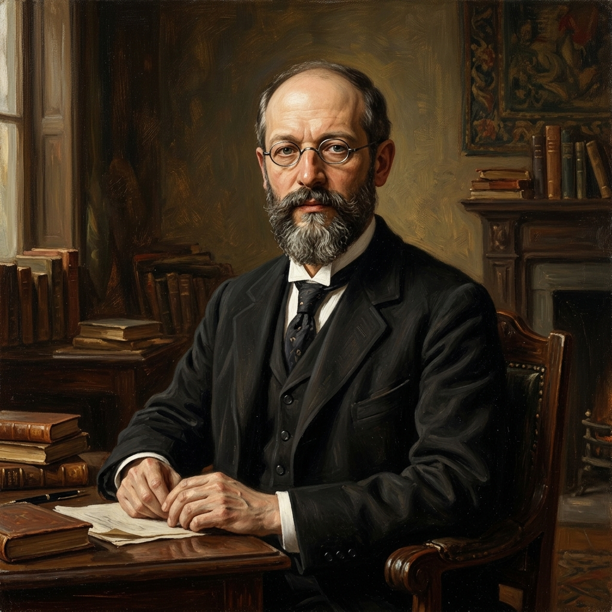

Funkcija 1
„Plaćam kartom.”
Sredstvo razmjene. Ne moraš naći nekoga tko ima ono što trebaš i istodobno treba ono što ti imaš. Dovoljno je da oboje prihvaćate novac.
Lekcija 06
Novčanica od 50 eura je komad papira koji vrijedi gotovo ništa. Ipak, za nju ćeš raditi cijeli dan. Zašto? Ekonomija kaže da je novac sredstvo plaćanja. Sociologija dodaje: novac je odnos među ljudima, i to jedan od najmoćnijih koje smo ikad izmislili.
Osnovni pojmovi
Ekonomisti novcu pripisuju tri funkcije. Sociologe zanima nešto drugo: zašto uopće vjerujemo da novac vrijedi.
Funkcija 1
„Plaćam kartom.”
Sredstvo razmjene. Ne moraš naći nekoga tko ima ono što trebaš i istodobno treba ono što ti imaš. Dovoljno je da oboje prihvaćate novac.
Funkcija 2
„Koliko to košta?”
Mjera vrijednosti. Kruh, koncert i sat instrukcija postaju usporedivi jer se svi izražavaju istom jedinicom.
Funkcija 3
„Štedim za ljeto.”
Sredstvo čuvanja vrijednosti. Kruh se pokvari za tri dana, a novac možeš ostaviti za sljedeću godinu.
Na otoku Yap u Tihom oceanu kao novac su se koristili golemi kameni koluti, rai, neki teži od automobila. Nisu se micali: svi su jednostavno znali čiji je koji. Jedan je kamen tijekom prijevoza pao u more i potonuo. Obitelj koja ga je posjedovala ostala je bogata, jer su svi na otoku i dalje priznavali da kamen postoji i da je njihov.
Novac ne mora biti ni vidljiv. Mora samo postojati dogovor.
Prvog siječnja 2023. Hrvatska je uvela euro. Novčanica od 200 kuna nije se promijenila ni za milimetar, ali se nakon razdoblja zamjene više nije mogla potrošiti u trgovini. Isto se dogodilo i s dolarom kad je 1971. prestao biti zamjenjiv za zlato: od tada novac vrijedi samo zato što država jamči, a mi vjerujemo.
Vrijednost nije u papiru, nego u odnosu među ljudima.
Sociološki zaključak: novac je sustav društvenog povjerenja. Vrijedi dok svi zajedno vjerujemo da vrijedi. Kad to povjerenje pukne, kao u hiperinflaciji, novac se pretvara u ono što fizički jest: papir.
Klasik
Njemački sociolog Georg Simmel napisao je 1900. prvu veliku knjigu o tome što novac čini ljudima, a ne tržištu. Odgovor mu je bio dvostruk: novac nas oslobađa i istodobno hladi.

Seljak koji je gospodaru plaćao u žitu i radu bio je vezan uz zemlju i uz osobu. Kad davanje postane novčano, odnos postaje bezličan: platiš i slobodan si. Novac ti omogućuje da radiš za bilo koga, kupiš od bilo koga i živiš gdje želiš.
Ista bezličnost hladi odnose. Kvaliteta se svodi na kvantitetu: pitamo „koliko?” umjesto „kakvo?”. Simmel u velegradu vidi blaziranost: ravnodušnost čovjeka kojem je sve jednako vrijedno, jer sve ima cijenu. Novac je, piše, strašni izjednačivač.
Veza s 1. lekcijom. Simmelova slika vrlo je bliska Weberovoj racionalizaciji i Durkheimovoj organskoj solidarnosti: moderno društvo povezuje milijune neznanaca koji ovise jedni o drugima, a da se ne poznaju. Novac je ono što takvu povezanost čini mogućom.
Teorijski pristupi
Isti novac, tri različita pitanja. Ovo su iste tri perspektive kao u 1. lekciji.
Funkcionalizam · makro
„Novac je ljepilo složenog društva.”
Bez novca nema razvijene podjele rada: liječnik ne bi mogao plaćati pekaru operacijama. Novac omogućuje suradnju milijuna ljudi koji se nikad neće sresti.
Pita: kako novac pridonosi stabilnosti i funkcioniranju cjeline?
Konfliktna teorija · makro
„Novac je moć.”
Novac nije neutralan. Tko ga ima, njime kupuje i utjecaj, bolje obrazovanje, zdravlje i slobodno vrijeme. Novac se gomila kod onih koji ga već imaju, pa se nejednakost prenosi s generacije na generaciju.
Pita: tko ima novac, tko ga nema i kako se ta razlika održava?
Interakcionizam · mikro
„Novac je simbol.”
Ista novčanica znači različito u različitim situacijama. Plaćen ručak i ručak koji te prijatelj „časti” nisu ista interakcija. Trošenjem gradimo i pokazujemo identitet.
Pita: koje značenje ljudi pridaju novcu u svakodnevnim situacijama?
I Weber ima nešto reći. U djelu Protestantska etika i duh kapitalizma (1905.) tvrdi da je zarađivanje novca postalo moralna dužnost, „poziv”, pod utjecajem protestantske religioznosti. Bogatstvo se nije smjelo rasipati nego ponovno ulagati. Tako je religija, prema Weberu, nenamjerno pomogla rađanju kapitalizma.
Primijeni
Za svaki primjer odaberi pojam iz lekcije koji ga najbolje objašnjava.
Video analiza
Pogledaj video, a zatim usmeno ili pismeno odgovori na tri pitanja ispod njega.
 Gledaj video na YouTubeu
Otvara se u novoj kartici. Vlasnik videa ne dopušta prikaz na drugim stranicama.
Gledaj video na YouTubeu
Otvara se u novoj kartici. Vlasnik videa ne dopušta prikaz na drugim stranicama.
Što misliš da je najbitnija spoznaja o novcu koju si saznao/saznala iz videa?
Kojoj sociološkoj perspektivi pripada pristup koji zauzima ovaj video i zašto?
Misliš li da novac zaslužuje i opravdava vrijednost koju ima u našim životima? Objasni odgovor.
Novac i položaj
Dvoje ljudi može imati jednako novca, a ipak ne stajati na istom mjestu u društvu. Francuski sociolog Pierre Bourdieu objasnio je zašto.
„Distinkcija”, 1979.
Novac nije jedini kapital.
Veza s 3. lekcijom: Pareto je pokazao da mala manjina posjeduje velik dio bogatstva. Bourdieu pokazuje kako se ta prednost održava: ne samo novcem, nego i znanjem, ukusom i vezama koje se prenose s generacije na generaciju.
Komodifikacija
Komodifikacija je proces u kojem nešto što prije nije imalo cijenu postaje roba za prodaju: voda, zdravlje, obrazovanje, pažnja, pa i prijateljstvo. Filozof Michael Sandel (2012.) upozorava da novac ne mijenja samo tko nešto dobiva, nego i što to jest.
Sandelova dva prigovora. Prvi je nepravednost: kad se nešto važno prodaje, dobivaju ga oni koji imaju novca, a ne oni kojima najviše treba. Drugi je kvarenje: neke stvari cijena mijenja iznutra. Kupljeno prijateljstvo nije prijateljstvo. Dijete plaćeno da čita možda čita više, ali uči da je čitanje posao, a ne užitak.
Nema točnih odgovora. Klikni i pročitaj sociološki komentar.
„Novac je najuniverzalniji i najučinkovitiji sustav uzajamnog povjerenja ikad osmišljen.”
Novac i država
Porez je novac koji svi dajemo državi da bi plaćala ono što koristimo zajedno: škole, bolnice, ceste, policiju, vatrogasce i mirovine.
Javna dobra koriste svi, a nitko ih ne bi mogao platiti sam. Nitko ne gradi vlastitu cestu ni vlastitu bolnicu. Porezom svatko plati mali dio, a zajedno dobivamo nešto što nitko ne bi imao sam.
Zašto porez nije dobrovoljan? Javna rasvjeta svijetli i onome tko je nije platio. Kad bi plaćanje bilo dobrovoljno, svatko bi čekao da plate drugi, pa ne bi platio nitko. Zato je porez obvezan.
Veza s početkom lekcije: porez je povjerenje. Ljudi plaćaju porez kad vjeruju da ga plaćaju i drugi i da će država novac potrošiti pošteno. Sociolozi to zovu porezni moral. Kad se proširi priča da „svi varaju”, varaju i oni koji inače ne bi.
Hrvatska
| Porez | Što je i tko ga plaća | Koliko |
|---|---|---|
| PDV (porez na dodanu vrijednost) | Skriven je u cijeni gotovo svega što kupuješ. Plaća ga svatko tko nešto kupi. Državi donosi najviše novca. | 25 %, a za neke proizvode manje: 13 % (npr. hrana u restoranu) i 5 % (npr. kruh, mlijeko, knjige, lijekovi) |
| Porez na dohodak | Plaća se na plaću i druge prihode građana. Prvih 600 € mjesečno se ne oporezuje (osobni odbitak). | Stopu bira grad, npr. u Zagrebu 23 %, a na vrlo visoke plaće 33 %. Mladi do 25 godina porez dobivaju natrag. |
| Doprinosi | Nisu porez, ali su obvezni i uzimaju se iz svake plaće. Idu za mirovine i zdravstvo. | 20 % bruto plaće za mirovinu, a poslodavac plaća još 16,5 % za zdravstvo |
| Porez na dobit | Plaćaju ga tvrtke na zaradu. | 10 % za manje tvrtke, 18 % za veće |
| Trošarine | Posebni porez na gorivo, alkohol i cigarete, skriven u cijeni. Služi i tome da ljudi tih proizvoda kupuju manje. | Fiksni iznos po litri ili kutiji |
Primjer
Plaća u ugovoru zove se bruto, a ono što sjedne na račun neto. Upiši bruto plaću.
Primjer za Zagreb, za osobu stariju od 25 godina bez djece.
Je li porez pravedan? Porez na dohodak je progresivan: tko zarađuje više, plaća veći postotak. PDV je za sve isti, ali siromašni troše gotovo sav novac, a bogati dio štede. Zato PDV siromašnije opterećuje više, a niže stope na kruh i mlijeko to malo ublažavaju.
Novac i generacije
Od prve plaće 20 % bruto iznosa odlazit će ti na mirovinu. Mirovinski sustav najveći je ugovor među generacijama koji imamo: danas ti plaćaš za bake i djedove, a sutra će netko plaćati za tebe. Hrvatski sustav ima tri stupa.
I. stup · obvezni · 15 %
„Mi plaćamo njima, netko će plaćati nama.”
Generacijska solidarnost. Doprinosi današnjih radnika odmah se isplaćuju današnjim umirovljenicima. Nema osobnog računa ni ušteđevine. Vodi ga Hrvatski zavod za mirovinsko osiguranje (HZMO).
Rizik: demografija. Ako je radnika sve manje, a umirovljenika sve više, novca nema dovoljno.
II. stup · obvezni · 5 %
„Štedim za sebe.”
Individualna kapitalizirana štednja. Novac ide na tvoj osobni račun u mirovinskom fondu, koji ga ulaže u obveznice i dionice. Novac je tvoj i raste kroz desetljeća.
Rizik: tržište. Ako burza padne, pada i vrijednost ušteđevine.
III. stup · dobrovoljni
„Štedim još malo više.”
Dobrovoljna štednja u dobrovoljnim mirovinskim fondovima. Nitko te ne prisiljava, ali država nagrađuje svaku uplatu poticajem.
Rizik: isti kao u II. stupu, ali uplate su tvoj izbor.
Mirovina ovisi o tome koliko si dugo radio/radila (staž) i koliko si zarađivao/zarađivala u odnosu na prosječnu plaću. Iz toga nastaju osobni bodovi, koji se množe s aktualnom vrijednošću mirovine (iznosom koji vrijedi jedan bod i koji se usklađuje dvaput godišnje) te s faktorima koji ovise o vrsti mirovine.
Mirovine se usklađuju 1. siječnja i 1. srpnja, prema rastu cijena i plaća.
Starosna mirovina: muškarci s 65 godina, žene s 64 godine, uz najmanje 15 godina staža.
Dob za žene raste za tri mjeseca godišnje, dok se do 2030. ne izjednači s muškarcima.
Prijevremena mirovina: muškarci sa 60 godina i 35 godina staža, žene s 59 godina i 34
godine staža, ali uz trajno umanjenu mirovinu. Od 2026. to umanjenje prestaje kad umirovljenik navrši 70.
Od 65. godine umirovljenik može raditi i puno radno vrijeme, uz isplatu pola mirovine.
Demografski problem. Kad je sustav generacijske solidarnosti nastajao, na jednog umirovljenika dolazilo je nekoliko radnika. Danas u Hrvatskoj na jednog umirovljenika dolazi tek oko 1,3 osiguranika. Doprinosi zato nisu dovoljni, pa znatan dio mirovina država plaća iz proračuna, dakle iz poreza. Upravo je zbog toga 2002. uveden II. stup: da dio budućih mirovina ne ovisi o tome koliko će djece roditi sljedeća generacija.
Najvažnije za tebe
II. stup je obvezan za svakoga tko se prvi put zaposli prije 40. godine, dakle i za tebe. Odluke koje ćeš donijeti na prvom poslu mogu ti za 45 godina značiti razliku od nekoliko desetaka tisuća eura.
Svaki mjesec 5 % tvoje bruto plaće sjeda na tvoj osobni račun. To nije porez ni državni novac, nego tvoja imovina. Ako umreš prije mirovine, a nitko nema pravo na obiteljsku mirovinu, ušteđevina se nasljeđuje.
Kad se prvi put zaposliš, imaš mjesec dana da izabereš mirovinski fond. Ako ne izabereš, REGOS (Središnji registar osiguranika) rasporedit će te sam. Danas postoje četiri mirovinska društva: Allianz ZB, Erste, PBZ Croatia osiguranje i Raiffeisen.
REGOS vodi račune i prikuplja uplate, mirovinska društva ulažu novac, a HANFA (Hrvatska agencija za nadzor financijskih usluga) nadzire da ulažu po zakonu. Fondovi naplaćuju malu godišnju naknadu za upravljanje, koja je zakonom ograničena.
U II. stupu je krajem listopada 2026. bilo oko 2,43 milijuna članova, a fondovi su krajem rujna 2026. imali oko 29 milijardi eura neto imovine. To su najveći institucionalni ulagači u Hrvatskoj, vlasnici velikog dijela dionica hrvatskih tvrtki i državnih obveznica.
Mirovinsko društvo smiješ promijeniti jednom godišnje. U prve tri godine članstva plaća se mala izlazna naknada (0,8 %, 0,4 % pa 0,2 % ušteđevine), a nakon tri godine promjena je besplatna. Kategoriju (A, B ili C) unutar istog društva možeš mijenjati jednom godišnje, bez naknade.
Svako društvo ima tri fonda. Razlikuju se po tome koliko smiju ulagati u dionice, koje u dugom roku više donose, ali kratkoročno jače padaju.
| Kategorija A | Kategorija B | Kategorija C | |
|---|---|---|---|
| Rizik | Najveći | Srednji | Najmanji |
| Dionice | Najviše 65 % imovine | Najviše 40 % | Nisu dopuštene |
| Državne obveznice | Najmanje 30 % | Najmanje 50 % | Najmanje 70 % |
| Za koga | Više od 10 godina do mirovine | Barem 5 godina do mirovine | Manje od 5 godina do mirovine |
| Prosječni godišnji prinos od početka rada | 8,96 % (od 2014.) | 5,64 % (od 2002.) | 3,04 % (od 2014.) |
Prinosi: HANFA, stanje 30. rujna 2026. Prošli prinosi ne jamče buduće. Kad mladi član ne izabere sam, REGOS ga raspoređuje u A ili B. Pet godina prije mirovine član iz A prelazi u B.
Koliko bi se moglo skupiti u II. stupu? Zarada fonda svake se godine ponovno ulaže, pa i ona zarađuje. Pomakni klizače.
Pojednostavljeno: plaća je cijelo vrijeme ista, prinos je svake godine jednak, a ne računaju se naknade ni inflacija. Stvarni prinosi skaču gore-dolje iz godine u godinu.
Dobivaš osnovnu mirovinu iz I. stupa (od HZMO-a) i mirovinu iz II. stupa. Ušteđevina iz II. stupa prelazi u mirovinsko osiguravajuće društvo (danas HRMOD ili RMOD), koje ti je isplaćuje doživotno i usklađuje s inflacijom. Najviše 20 % ušteđevine možeš podići odjednom, uz prvu mirovinu.
Ušteđevinu iz II. stupa prenosiš u državni proračun, a mirovina ti se računa kao da nikad nisi bio/bila u II. stupu. To se isplati kad je ušteđevina mala, a mirovina iz I. stupa bila bi veća. Prije odluke dobiješ izračun obje mogućnosti i biraš povoljniju.
Sociološki pogled: tko snosi rizik? U I. stupu rizik je zajednički: ako generacija ima manje djece, svi dobivaju manje. U II. stupu rizik je osobni: tvoja mirovina ovisi o tvom fondu i o burzi. To je primjer onoga što je Ulrich Beck iz 4. lekcije zvao individualizacijom rizika: društvo prebacuje rizike sa zajednice na pojedinca. Zato se o II. stupu stalno raspravlja. Neke su ga zemlje, primjerice Mađarska 2010., praktički ukinule i ušteđevinu prenijele državi.
U dobrovoljni mirovinski fond može uplaćivati svatko, koliko želi. Država svake godine na uplate dodaje 15 % poticaja, najviše 99,54 € godišnje. Za puni poticaj treba uplatiti 663,61 € godišnje, otprilike 55 € mjesečno. To je 15 % zarade prije nego što fond išta zaradi. Fondovi mogu biti otvoreni (za sve) ili zatvoreni (za zaposlenike neke tvrtke ili članove sindikata), a i poslodavac može uplaćivati za radnike, do određenog iznosa bez poreza.
Ušteđevina se može početi koristiti od 55. godine.
Imaš 19 godina i upravo si potpisao/potpisala prvi ugovor o radu. Koju kategoriju II. stupa biraš? Klikni i pročitaj komentar.
Do mirovine ti je oko 46 godina.
Za ponavljanje
Provjeri se
Bez ocjene i bez pritiska. Pitanja su u stilu državne mature.
—